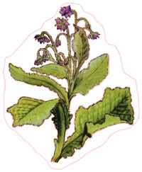
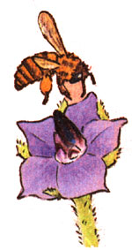
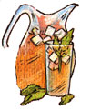

Lately, more and more people have begun to understand just how limited - in both variety and nutritional value - our "modern" diets hove become. This realization has sparked a new and widespread interest in the culinary and therapeutic uses of herbs . . . those plants which - although not wellknown today-were, just one short generation
ago, honored "guests" can the dinner tables and in the medicine chests
of our grandparents' homes. In this regular feature, MOTHER examines the availability, cultivation, and benefits of our "forgotten" vegetable foods and remedies . . . and-we hope-helps prevent the loss of still another bit of ancestral lore.
Beautiful borage (Borago officinalis) is a native of Allepo, Syria. By the time the Roman Empire was at its height, however, the herb had been widely distributed throughout the Mediterranean region. The plant is believed to be the same one that Homer called "nepenthe", and Pliny praised the herb for its ability to drive away melancholy and bring pleasant forgetfulness.
BIG AND BEAUTIFUL
The pretty plant belongs as much in a flower garden as in an herb bed, and is well worth the large amount of space it requires. Germinating quickly from seed, borage grows from one to three feet tall . . . with coarse, four- to six-inch gray-green leaves.
Both the stems and foliage are covered with bristly hairs, and mature specimens produce clusters of five-pointed, starlike flowers that are almost an inch across.
Borage, though highly adaptable, prefers slightly poor soil with some sun and only a moderate amount of water. Young seedlings (which are difficult to trans plant) should be thinned to at least 18 inches apart. (Each plant can take up as much as two square feet of space, and produce literally hundreds of deep blue blossoms.)
When planted in the fall, borage generally blooms in May . . . while seeds sown in the spring will produce June and July blossoms. If you want a succession of flowers, seed at three-week intervals throughout the summer . . . or simply cut off the blooms to encourage flowering.
Once planted, the herb will-if given a chance-usually reseed itself over the years, and the selfsown plants are frequently even more glorious than the first year's crop. The flowers are also an excellent bee forage and yield a marvelous honey.
Some sources for borage seeds are George W. Park Seed Company (Dept. TMEN, Greenwood, South Carolina 24963), Hickory Hollow (Dept. TMEN, Route 1, Box 52, Peterstown, West Virginia 24963), Nichols Garden Nursery (Dept. TMEN, 1190 North Pacific Highway, Albany, Oregon 97321), and Borchelt Herb Garden (Dept. TMEN, 474 Carriage Shop Road, East Falmouth, Massachusetts 02536. (When ordering catalogs from the latter three companies, please enclose a postage stamp.)
POTHERBS TO CANDY
The tender young borage leaves (which lose their flavor when dried) have a cucumberlike taste and aroma and can be used in salads, herb vinegars, and pickling.
Borage leaves have also long been thought to have a cooling effect in beverages, and were once widely used as an addition to tankards of wine and cider. They're still commonly included in recipes for claret cup . . . a drink which consists of iced claret and a lit tle brandy seasoned with sugar, sliced lemon, and the herb leaves.
Whole flowers can be cut up to add color to potpourri or to decorate iced drinks, cakes, ice cream, and candy. When separated from their calyxes, the corollas can be floated in cold drinks like maraschino cherries or used to garnish salads.
To make a pot of borage tea, pour a pint of boiling water over an ounce of leaves and let 'em steep for 10 minutes . . . but drink only a wineglass full at a time, because the infusion has a diuretic action. Herbalists claim that borage will also sooth irritated or inflamed mucous membranes, reduce fever, and-when employed as a poultice-ease inflammatory swellings.
In France, the herb is valued for chest and throat complaints . . . and it can, of course, still be used as in ancient times to "make men and women merry and joyful and to drive away sadness".
|
 |
 |
 |